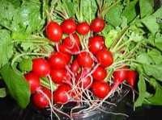

ラディッシュの生産量 都道府県ランキング
1位から3位までと、とれた量
ラディッシュが日本でいちばん多くとれるのは愛知県です。484 tで、全国（706 t）の69%を占めます。

| 順位 | 都道府県 | 収穫量 | 全国に占める割合 |
|---|---|---|---|
| 1位 | 愛知県 | 484 t | 69% |
| 2位 | 北海道 | 60 t | 8.5% |
| 3位 | 福岡県 | 44 t | 6.2% |
この数字について
- 分類：アブラナ科
- 全国の収穫量：706 t
- この数字が表すもの：収穫量（畑や田でとれた重さ）
- 調査：地域特産野菜生産状況調査 令和6年産
- 19県分を調査（調査していない県は順位に入りません）
ラディッシュの生産量について、よくある質問
- ラディッシュの生産量が日本一の都道府県はどこですか？
- 愛知県です。地域特産野菜生産状況調査（令和6年産）で484 tでした。
- ラディッシュの生産量ランキング2位・3位はどこですか？
- 2位は北海道（60 t）、3位は福岡県（44 t）です。
- ラディッシュの全国の生産量はどれくらいですか？
- 706 t（令和6年産）です。